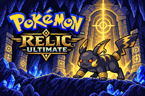

The region we remember
Begin in New Bark Town, receive Pikachu from Professor Elm and follow the established Johto story. The mystery of Relics and fossils gives that journey a new thread without stripping away the original adventure.

About the project
Pokémon Relics Ultimate brings together Kanto, Johto and Hoenn Pokémon with approved original Relic evolutions, wrapped in a familiar two-region Johto adventure.

Why PRU exists
Begin in New Bark Town, receive Pikachu from Professor Elm and follow the established Johto story. The mystery of Relics and fossils gives that journey a new thread without stripping away the original adventure.
New families and ancient transformations add depth to familiar favourites. RelicDex catalogues the 450 approved species and their artwork, with custom sprites sourced according to the project's approved art hierarchy.
Johto trainers, wild encounters and Gyms are being rebalanced to follow your growing team. Signature Relic Pokémon, interesting matchups and meaningful rewards are central goals.
PRU's source and verification work live on GitHub. Automated ROM builds confirm compilation, while hands-on save-file tests still determine what works correctly in the actual game.
The visual identity
PRU's title uses the approved 240×160, 256-colour Noxichu artwork. The intended introduction places the Celebi/Jirachi Last Wish sequence before a fade into this screen, with a separate blinking PRESS START prompt in the ROM.
The artwork is copied from the pinned PRU repository with a SHA-256 check and is not recoloured, rescaled or reinterpreted for website delivery.
Know the difference
The development log distinguishes source/build-tested features from gameplay-tested ones and keeps future Kanto features separate. Consult the current 18 October status, the game documentation, or RelicDex for precise information.